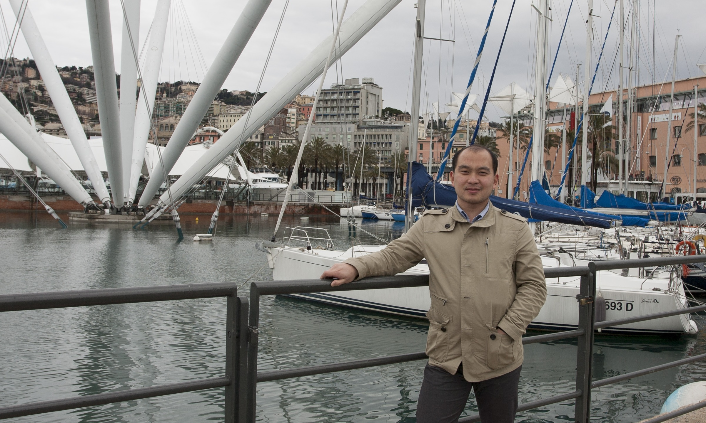

Dr. Li obtained his B.Eng from Harbin Institute of Technology in 2005, and his Ph.D. from Nanyang Technological University in 2012 under the supervision of Associate Prof. Sourav S. Bhowmick. He was a member of the Centre of Advanced Information Systems (now DISCO) during 2007-2011. He is currently affiliated with the School of Computer Science and Technology, Xidian University, and directs the Key Laboratory of Advanced Database Technology of Xi'an.
His research interests include social computing, knowledge discovery, graph mining, and data privacy in big data. Papers have appeared at top venues including SIGMOD, VLDB, KDD, CCS, FAST, and journals CSUR, VLDB J., etc.
Hui is one of the pioneers bringing cutting-edge technology into database education; his vision on technology-driven database education is documented in 2024 SIGMOD Record (DBrainstorming column). The corresponding platform DBEDU (库道) has been accessed by 120+ distinct institutions since 2022. Research and in-class experience studies have been published at SIGMOD, VLDB, SIGCSE, and IEEE TCDE; several works have received notable recognition, including the Best of SIGMOD 2026 award and the ACM SIGMOD 2026 Best Demonstration Honorable Mention.
Hui's research on influence maximization was nominated for the ★ Best Paper Award at ACM SIGMOD 2015! He has also received ★ Best Paper awards at MDM 2019, NDBC 2018 & 2023 on topics including spatial-temporal query processing and secure query processing. He also received the ★ Best Demonstration Honorable Mention Award at ACM SIGMOD 2026.
He served as the local-arrangement co-chair of SIGMOD 2021, and the Publicity Co-chair of SIGMOD 2027. Hui has served on the program committee (resp. editorial board) for several international conferences (resp. journals), including SIGMOD, VLDB, KDD, ICDE, EDBT, CIKM, DASFAA, DAPD, etc. He is currently the Associate Information Director of the SIGMOD Committee (2023-present).